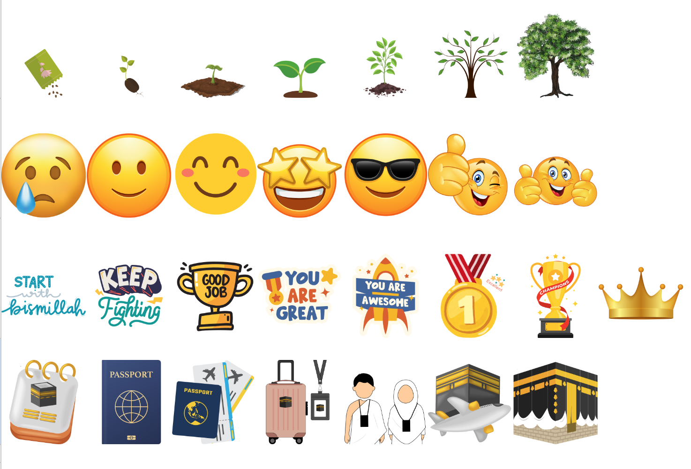

| A | B | |
|---|---|---|
1 | ||
2 | Assalamualaikum warahmatullahi wabarakatuh | |
3 | Hai, terimakasih sudah menggunakan "Daily Habits Tracker For Muslim/Muslimah" ini. | |
4 | Aku harap fitur ini bisa membantu kalian dalam merencanakan kegiatan kalian serta mewujudkan target hidup kalian ke depannya untuk lebih baik ya. Aamiin. | |
5 | ||
6 | Dalam fitur ini, dibagi menjadi beberapa tabel : | |
7 | 1) Tabungan Umroh : fitur yang bisa kalian gunakan untuk mencatat tabungan umroh kalian. Dalam fitur ini kalian bisa menuliskan motivasi apa yang ingin kalian capai sehingga kalian harus segera melaksanakan ibadah umroh dalam waktu secepat mungkin. | |
8 | 2) One Year Planner : fitur ini membantu kalian untuk merancang pertumbuhan kalian selama satu tahun. Dari pertumbuhan mindset, perkembangan skill, penjagaan terhadap kesehatan, atau perencaan pernikahan/kehidupan rumah tangga kalian. | |
9 | 3) Monthly Tracker : fitur ini membantu kalian untuk lebih teratur dalam ibadah-ibadah sunnah, realisasi penambahan skill, serta perawatan diri yang sering kali di lupakan. Kalian bisa menambahkan catatan bulanan di fitur ini. | |
10 | 4) Daily Habits : fitur ini membantu kalian untuk menciptakan kebiasaan harian yang disiplin dan lebih teratur. Aku tau, hidup tanpa keteraturan adalah hidup yang tidak bermakna, bahkan banyak hal yang kita lewatkan, terutama perkara ibadah. Ayo mari perbaiki bersama. | |
11 | ||
12 | Akses Fitur : | |
13 | Kalian bisa mengakses fitur ini melalui Laptop, Tablet, ataupun Handphone. Adapun untuk memudahkan akses kalian di Handphone mohon untuk mendownload lebih dulu aplikasi : Google Sheet yang ada di Play Store/App Store | |
14 | ||
15 | Catatan Penggunaan Fitur : | |
16 | Apa yang kalian akses hari ini adalah file copy, dan aku sebagai pembuat dari fitur ini tidak bisa mengakses apa yang sedang kalian edit. Untuk itu aku mempersilahkan kalian untuk mengedit fitur ini seperti "WARNA", "STIKER", "TULISAN" yang ada didalamnya sesuai dengan selera kalian. | |
17 | Tapi mohon diperhatikan untuk tidak mengedit "RUMUS" yang sudah dibuat, karena akan berdampak pada hasil tabel kalian. | |
18 | Proses pembuatan fitur ini tergolong rumit, mohon untuk tidak mengcopypaste / menjual / menyebarkan / membagi ulang fitur ini tanpa seijin pemilik ya. Semoga semuanya amanah. | |
19 | Apabila ada kendala dan pertanyaan bisa menghubungi Instagram @firaardianti / email firaardianti@gmail.com | |
20 | ||
21 | "Fitur ini hanyalah bentuk ikhtiar kita saja, selebihnya kita yang harus mengusahakan perubahan itu." | |
22 | "Allah tidak akan mengubah keadaan suatu kaum sehingga mereka mengubah apa yang ada pada diri mereka sendiri" (TQS Ar-Ra'd ayat 11) | |
23 | ||
24 | Semoga kita bisa mendapatkan level tertinggi di fitur ini ya. | |
25 |  | |
26 | ||
27 | Jazakumullah Khairan, Wassalamualaikum warahmatullahi wabarakatuh |